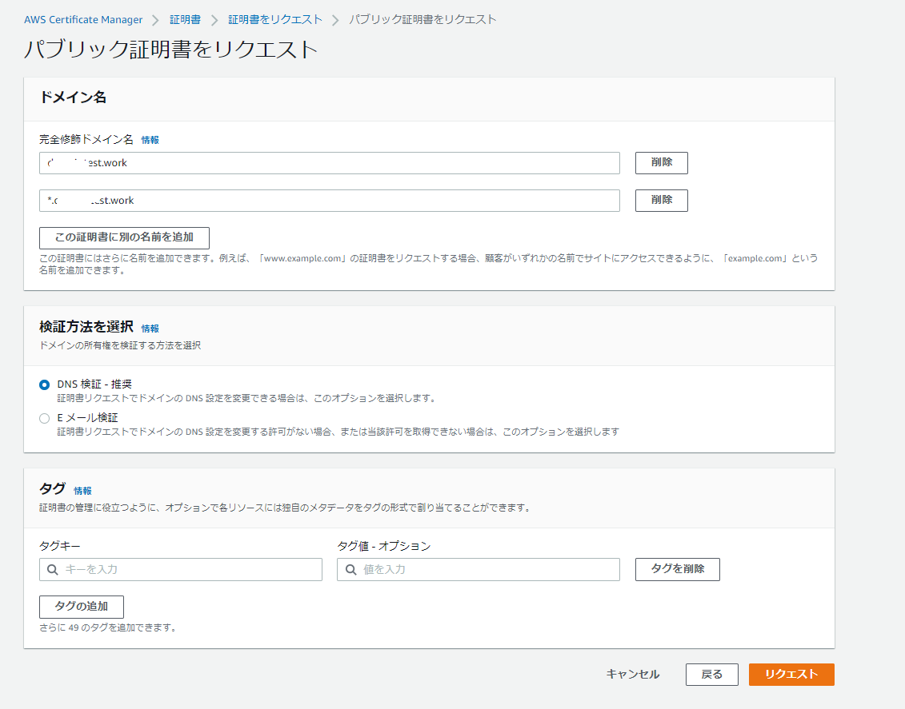
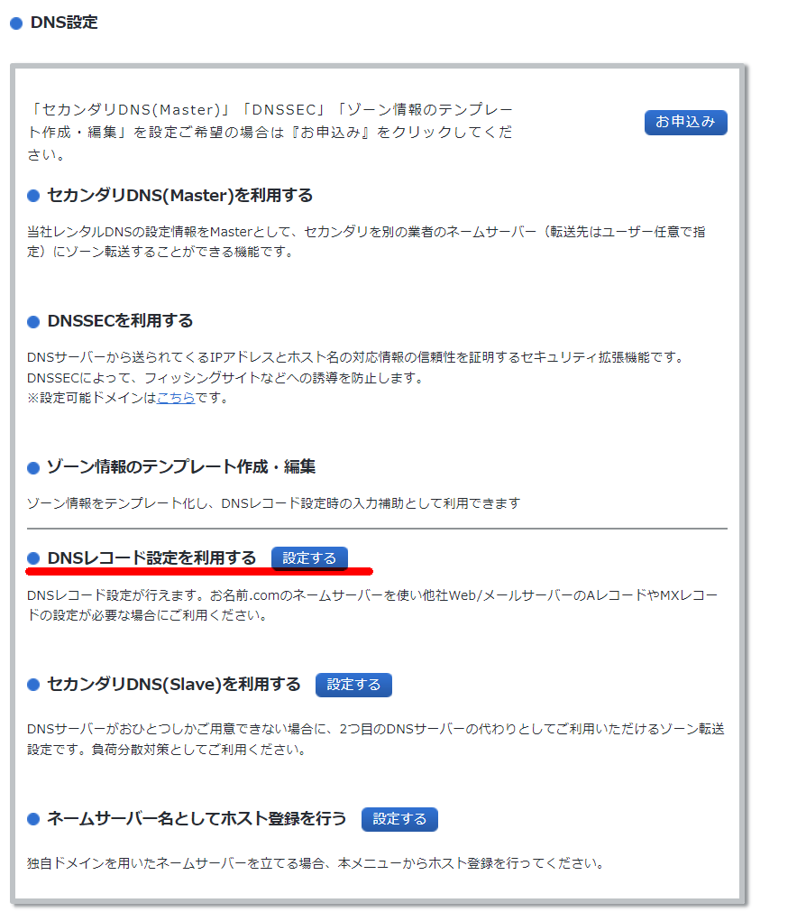
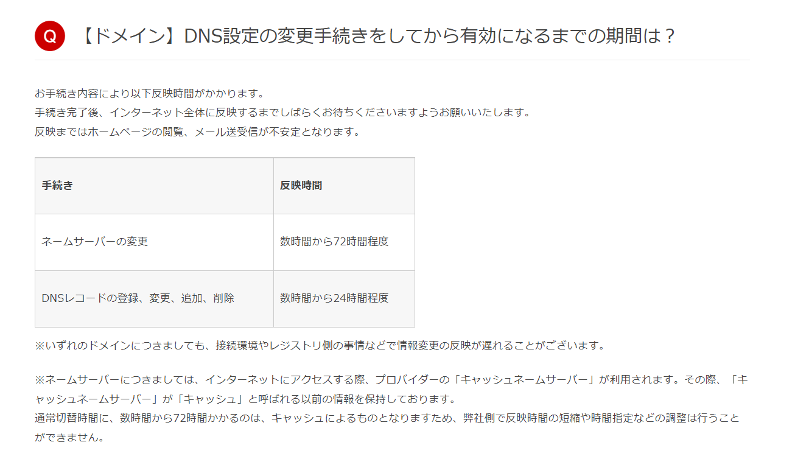

お名前.comで取得したドメインを使用してACMでSSL証明書を発行する
表題の通り、お名前.comで取得したドメインを使用してACMでSSL証明書を発行する際のメモ。
ACMからパブリック証明書をリクエスト
ドメイン名と検証方法を入力

証明書の発行中。しばらく待機する

証明書の詳細画面に移動して、「CSVにエクスポート」を選択して手元にダウンロードしておく。後続の手順で参照。

お名前.comに移動して「DNSレコードを設定する」に移動

対象ドメインを選択して次へ

DNSレコード設定を利用する

ACMの画面から下記のようなCSVをダウンロードしているはずなのでここから下記を入力する

| ホスト名 | TYPE | VALUE |
|---|---|---|
| Domain Name | CNAME | Record Value |
入力して追加する

ページ下部の設定はデフォルトのままチェックを付ける

設定するをクリック

完了となる

数時間から24時間程度と書かれているのでDNSの伝搬に時間が掛かるので気長に待つ。
https://help.onamae.com/answer/8081

数十分でステータスが発行済に変更になった

参考
検証を保留中の ACM 証明書の解決 https://aws.amazon.com/jp/premiumsupport/knowledge-center/acm-certificate-pending-validation/
関連しているかもしれない記事
- Spark on Docker on EC2環境を構築する
- Redshift Spectrumの同時実行性能パフォーマンス
- Redshiftから特定区切り文字でファイル出力する
- Apache Bench（abコマンド）で簡易的なアクセスをCloudFrontに実行
- S3オブジェクトの整合性チェックをどのように行うのか